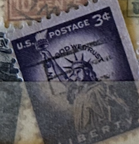
| SOURCE | TITLE| IMAGE MATCH | click to source page |
| www.ebay.com | Rare US POSTAGE STAMP 3 Cent Liberty Used Purple Lady ... | 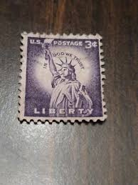 |
| www.ebay.com | SINGLE US 3¢ stamp SC #1057 Statue of Liberty MNH 1954 with ... | 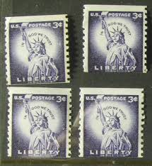 |
| www.etsy.com | Statue of Liberty 3c Unused Vintage 1959 Postage Stamps for ... | 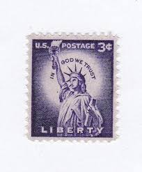 |
| www.mysticstamp.com | 1035 - 1954 3c Liberty Series: Statue of Liberty - Mystic ... | 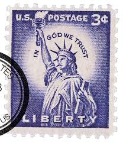 |
| www.amazon.com | Amazon.com: 1954 Liberty 3 Cent US Postage Stamp Plate Block ... | 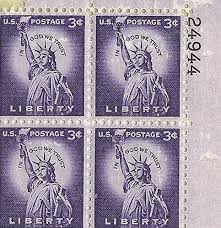 |
| www.etsy.com | Pack of 20 .. 3 Cent Statue of Liberty Stamp Issued 1956 ... | 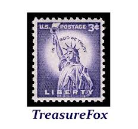 |
| www.ebay.com | 3 Cent US Liberty Stamp 1960's | eBay | 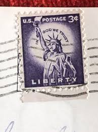 |
| poshmark.com | Other | 1954 Us Statue Of Liberty 3 Cent Stamp | Poshmark | 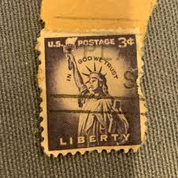 |
| www.mysticstamp.com | 1057 - 1956 3c Liberty Series: Statue Of Liberty, Coil ... | 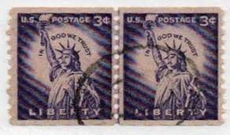 |
| www.instagram.com | Milwaukee Public Library Special Collections | Happy ... | 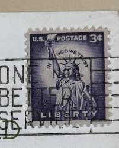 |
| www.facebook.com | What is the value of a single 3 cent purple Liberty stamp ... | 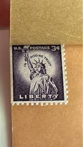 |
| www.hipstamp.com | 1035 3 cent 1954 Statue Liberty, used VF | United States ... | 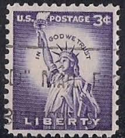 |
| www.reddit.com | Anyone have any idea what this little book containing three ... | 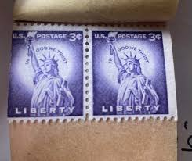 |
| littlepostagehouse.com | Statue of Liberty Postage Stamps — Little Postage House | 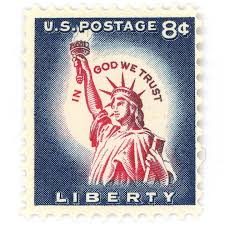 |
| tortugahobby.com | 1954 - Statue Of Liberty From Liberty Series - 8 Cent Stamp ... | 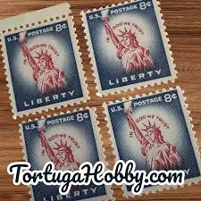 |
| www.bidcurios.com | 1954 USA 3-cent "Statue of Liberty" Strip of 4 Used Stamps ... | 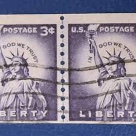 |
| www.truegether.com | 4.7% Off on US Stamp Statue of Liberty 3c Used Bar Cancel ... | 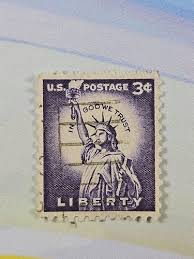 |
| ittybittystampcompany.com | Scott # 1057a Line Pair Small Holes Dry Printing MNH – The ... | 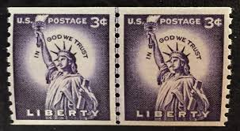 |
| www.ebay.com | 2 - Liberty 3 Cents Stamps Lady Statue Of Liberty U.S. ... | 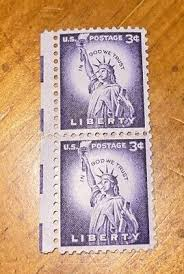 |
| www.linns.com | Gripper cracks before the 1954-68 Liberty issue | 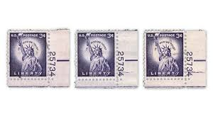 |
| www.etsy.com | Rare Statue of Liberty 3 Cent Stamp Purple - Etsy | 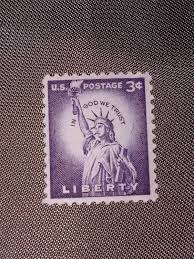 |
| www.gettyimages.com | 28,081 Free Post Stock Photos, High-Res Pictures, and Images ... | 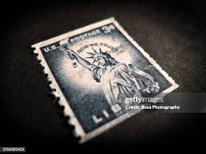 |
| www.allnumis.com | 3¢ Statue of Liberty 1954, Statue of Liberty - United States ... | 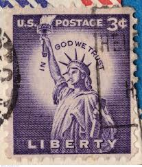 |
| www.hipstamp.com | United States-1957 Sc#1035 Clown Club Cover- Liberty Stamp ... | 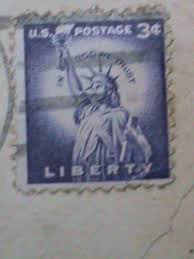 |
| www.youtube.com | 3 Cent Statue of Liberty Stamp Value in 2025 – Is Yours ... | 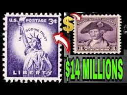 |
| treasurefoxstamps.com | 3c Statue of Liberty Stamps .. Vintage Unused US Postage ... | 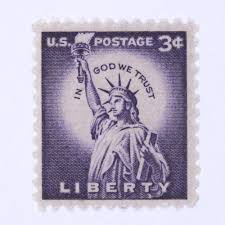 |
| www.mysticstamp.com | BK104 - 1954-58 3c Liberty, Entire Booklet - Mystic Stamp ... | 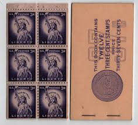 |
| www.facebook.com | Value of unused liberty stamp? | 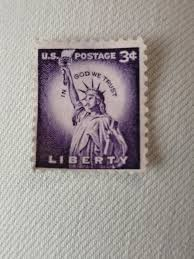 |
| www.kenmorestamp.com | # 566 - 15¢ Statue of Liberty - gray Perf. 11 | 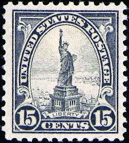 |
| postalmuseum.si.edu | Bay 9 | National Postal Museum | 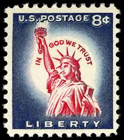 |
| www.shutterstock.com | 4+ Hundred 3 Cent Stamp Royalty-Free Images, Stock Photos ... | 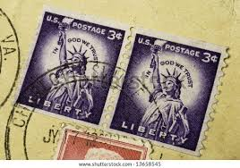 |
| edelweisspost.com | 10 Statue of Liberty Vintage Postage Stamps // Blue and ... | 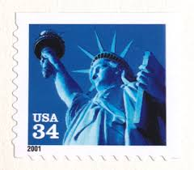 |
| www.youtube.com | The Liberty Series Begins - YouTube | 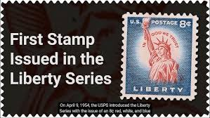 |
| www.greatbigstuff.com | Statue of Liberty Postage Stamp – GreatBigStuff.com | 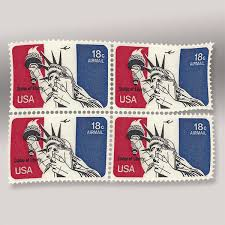 |
| www.alamy.com | 3 cent stamp hi-res stock photography and images - Alamy | 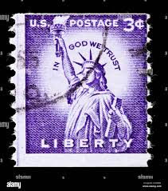 |
| www.dreamstime.com | Statue Liberty Bottom View Stock Photos - Free & Royalty ... | 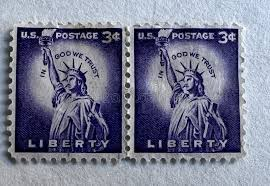 |
| www.apnss.org | Liberty series | 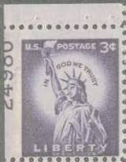 |
| www.stormthecastle.com | Identifying the Liberty Stamps | 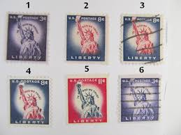 |
| www.jaysmith.com | Jay Smith & Associates: United States: Stamps: EFOs: Errors ... | 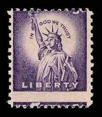 |
| www.ebay.com | 3 Cent United States Postage Stamp Featuring The Statue Of ... | 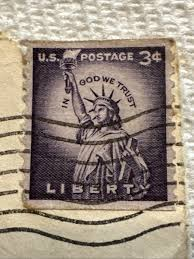 |
| www.osta.ee | USA " LIBERTY " 1954 (247136150) - Osta.ee | 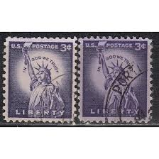 |
| findyourstampsvalue.com | Value of u s postage statue liberty purple 3cent stamps | 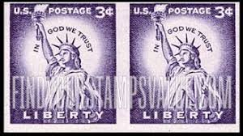 |
| littlepostagehouse.com | Statue of Liberty Purple Vintage Postage Stamps — Little ... | 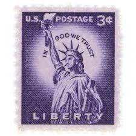 |
| www.etsy.com | 3 Cent Rate Purple Liberty Stamp (set of 8) - Etsy | 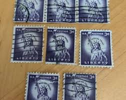 |
| www.hipstamp.com | 1954 3c Statue of Liberty, In God We Trust Scott 1035 Mint F ... | 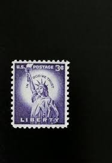 |
| www.leboncoin.fr | Timbre USA - Collection | 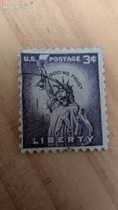 |
| in.pinterest.com | 98 Rare stamps ideas | rare stamps, stamp collecting, stamp | 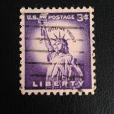 |
| morgandaviesart.com | Artist Deborah Pendell Stamps | MORGAN-DAVIES ART ... | 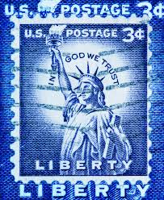 |
| www.dreamstime.com | Us stamp editorial photography. Image of paper, pattern ... | 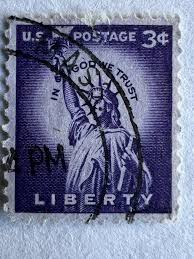 |
| www.facebook.com | Why same stamp has huge price difference? | |
| www.usa-stamps.com | USA Stamps | Browse USA Stamps | Misperfs Collection | |
| www.mysticstamp.com | 1044A - 1961 11c Liberty Series: Statue of Liberty - Mystic ... | |
| www.linns.com | How stamps mark the long-term friendship between France and ... | |
| www.instagram.com | As stamp prices continue to rise, it appears most people are ... | |
| starozitnosti.bazar.sk | Poštová známka č. 2529 - Dubnica nad Váhom | Bazar.sk | |
| www.leboncoin.fr | Timbre statue de la liberté - Collection | |
| www.ebid.net | US Stamp #2993-92 mint: 1995 32c Jazz Musicians - sheet of ... | |
| in.pinterest.com | 19 Rare stamps ideas | rare stamps, stamp collecting, old stamps | |
| littlepostagehouse.com | Statue of Liberty Red, White, and Blue Vintage Postage ... |